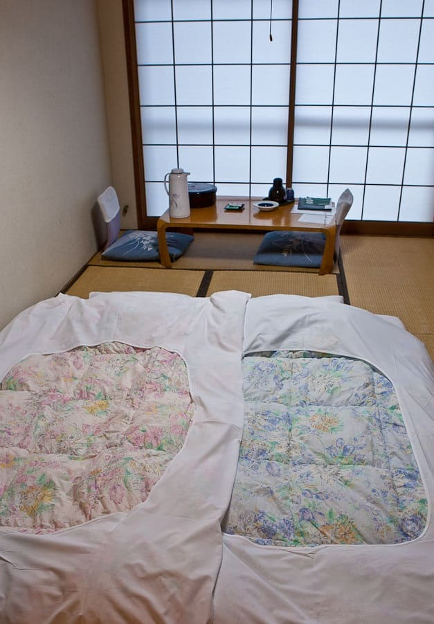

Planificar el alojamiento en Japón es una de las decisiones más importantes que tenemos que tomar cuando nos planteamos viajar al país del sol naciente. Y es que el alojamiento es algo íntimamente relacionado con nuestro presupuesto para viajar a Japón.
Por supuesto, también podemos ir a la aventura y buscar sitio donde dormir en cada lugar en el que decidamos pasar la noche (algo poco recomendable en temporada alta, pero factible si se va de mochilero o de viaje independiente).
Pero si no queremos mucho problema y nos gusta tener todos los cabos atados antes de subir al avión, pensamos que esta pequeña guía os puede ayudar a comprender cuáles son las diferentes opciones de alojamiento en Japón que tenemos a nuestra disposición y cómo escoger una u otra y dejarlo todo resuelto a través de Internet, con opciones para todos los presupuestos, y con una amplísima variedad de alojamientos diferentes, por si no queremos ir al hotel de toda la vida.

En Japón hay muchísimas opciones de alojamiento para todos los gustos y presupuestos: desde los hoteles de lujo hasta los albergues, pasando por alojamientos de estilo tradicional como ryokan, minshuku o shukubo. Te los detallamos todos a continuación, para que puedass escoger el que más les convenga en cada caso.
Por mucho que Japón sea un país que valora sus tradiciones, lo cierto es que está repleto de hoteles de estilo occidental divididos en dos grandes categorías: hoteles de lujo y business hoteles u hoteles especialmente dedicados a los hombres de negocios.
Dentro de los hoteles de lujo encontramos los de las grandes cadenas internacionales como St Regis, Westin, Hyatt, Hilton, Four Seasons, Ritz-Carlton, etc., así como hoteles de cadenas exclusivamente japonesas, como puede ser Hoshino Resorts o Hankyu, JAL Hotels o Tokyu (curiosamente, de estos tres ejemplos, los tres tienen también medios de transporte). Algunos de estos hoteles, como pertenecen a cadenas japonesas, tienen habitaciones de estilo tradicional, con suelo de tatami y futon, aunque suelen ser las habitaciones más caras de todo el hotel.

Un ryokan es un alojamiento de tipo tradicional japonés, con suelos de tatami, futon para dormir, bañera de tipo ofuro, y servicios de restauración con platos tradicionales japoneses (ya estén incluidos en el precio o no).
Los precios de los ryokan varían muchísimo, porque existen ryokan de lujo, con desayuno, comida y cena incluidas, con asistente casi personal, situados en las mejores zonas, donde el precio por noche puede rivalizar con el precio por noche de un hotel de lujo de cadena internacional.
Sin embargo también existen alternativas más baratas aunque a veces a costa de un menor tamaño de habitación, de que los baños sean compartidos, etc. Y además, si hacemos una ruta por el Japón menos turístico, nos será fácil encontrar muy buenos ryokan a precios decentes.
Un minshuku es también un alojamiento tradicional japonés, pero más parecido a lo que sería un lugar de alojamiento y desayuno, es decir, un Bed & Breakfast de toda la vida. Suelen ser sitios más pequeños que un ryokan, a menudo casas particulares que tienen algunas habitaciones extra donde hospedar a los visitantes, y si viajamos por el interior de Japón es una opción muy interesante porque además es muy auténtica.
Aunque seguramente no sea la primera opción que se nos cruza por la cabeza cuando buscamos un alojamiento en Japón, los templos budistas también pueden ser una opción interesante. La experiencia de alojarse en un templo recibe el nombre de shukubo. Algunos lugares, como la montaña sagrada Koyasan, son especialmente famosos por la gran cantidad de templos que ofrecen alojamiento. Eso sí, la comida, que suele estar incluida, es totalmente vegetariana, además de que a las 6 o 6:30 de la mañana los monjes empiezan con sus cánticos
Lo cierto es que es algo que merece la pena hacer al menos una vez, por lo diferente que es respecto al tipo de alojamientos que tenemos por aquí, y aunque no es carísimo, tampoco es una ganga: una habitación con manutención puede rondar los 15.000 yenes.
Uno de los tipos de hoteles más peculiares que podemos encontrar son los archiconocidos hoteles cápsula, donde como su nombre indica, dormiremos en una cápsula. Lo cierto es que son más cómodos de lo que podría pensarse, y el espacio también es mayor de lo que imaginamos.
Suelen usarlos sobre todo los hombres de negocios que acaban sus juergas con compañeros de trabajo demasiado tarde para tomar el tren de vuelta a casa (no hay servicio de tren 24 horas en Japón), y a veces los turistas que viajan solos también los prueban.
La cadena Capsule Inn tiene unos pocos hoteles cápsula en varias ciudades japonesas, por si quieres echar un vistazo, con precios bastante ajustados.

Si no sabemos todavía qué queremos, podemos echar un vistazo a Booking, un portal de búsqueda de alojamiento muy conocido en todo el mundo
Otras opciones son la web de Japan Hotels & Ryokan Search , una herramienta web de la Japan National Tourism Organization que nos permite buscar por regiones, y seleccionar los criterios que queremos aplicar en la búsqueda: ryokan, minshuku, pensiones, hostales, templos, etc; o también Rakuten, otro portal de búsqueda de alojamiento muy conocido en Asia, seleccionando Japón en el desplegable de países. De esta forma nos aseguraremos que además de los típicos hoteles pertenecientes a cadenas internacionales, también será mayor la oferta de hoteles de cadenas asiáticas o japonesas.
También podemos utilizar Japanican ,una web de búsqueda perteneciente al conocido operador turístico JTB. La ventaja de esta web es que además de hoteles, también tiene un buscador de ryokan. El problema con estos buscadores es que a menudo es un poco complicado ver qué ofrece cada uno de los hoteles, por lo que siempre recomiendo visitar la propia web del hotel.